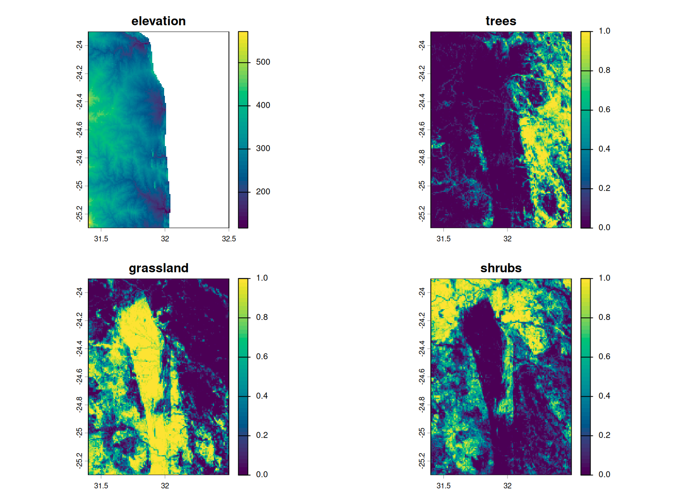
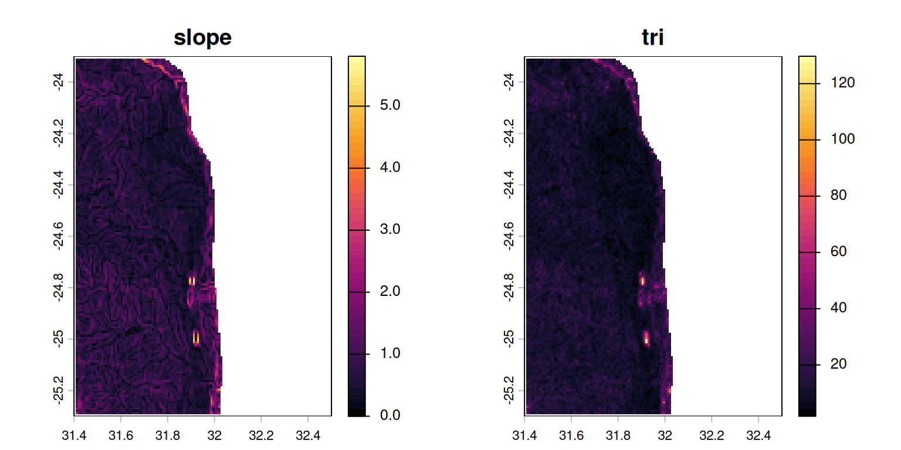
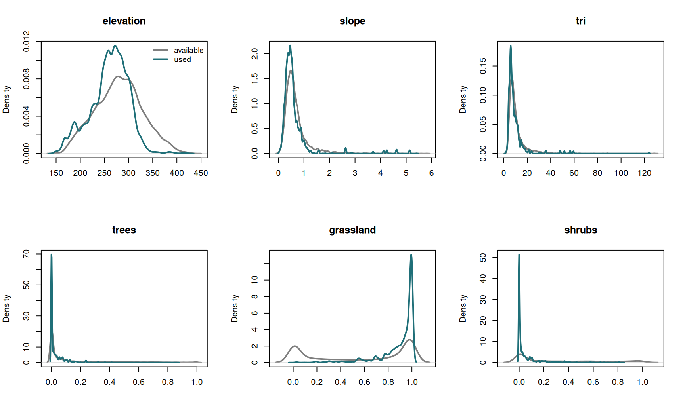
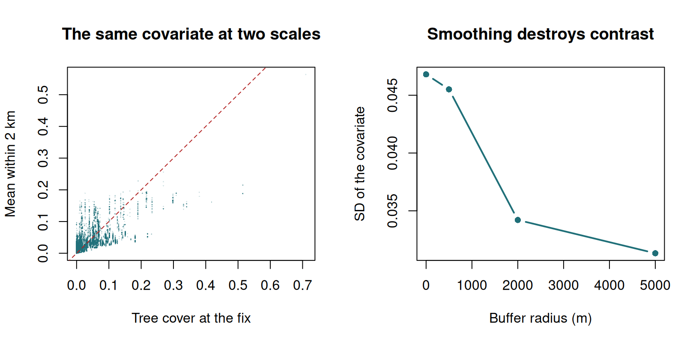
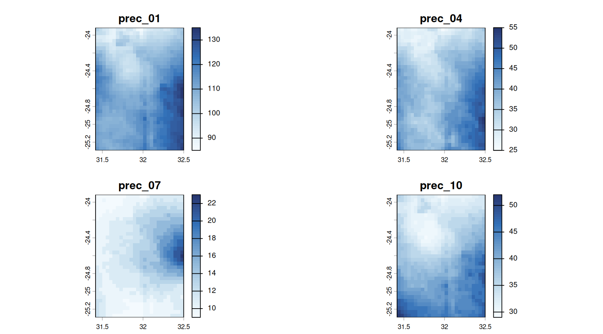
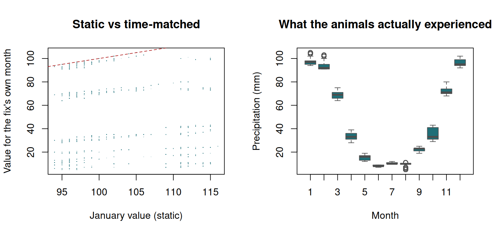

Exercise 5 — Environmental annotation
Class 5 · Theme 3
Goals. Read real elevation and land-cover rasters; derive terrain covariates; annotate the buffalo track; compare used with available; see how the answer changes with buffer radius; and build a time-matched annotation.
Time: ~55 minutes. Packages: terra, sf, amt, dplyr.
Task 1 — The rasters
elev <- rast("data/kruger_elevation.tif")
lc <- rast("data/kruger_landcover.tif")
elev
#> class : SpatRaster
#> size : 168, 132, 1 (nrow, ncol, nlyr)
#> resolution : 0.008333333, 0.008333333 (x, y)
#> extent : 31.4, 32.5, -25.3, -23.9 (xmin, xmax, ymin, ymax)
#> coord. ref. : lon/lat WGS 84 (EPSG:4326)
#> source : kruger_elevation.tif
#> name : elevation
#> min value : 117
#> max value : 572
names(lc)
#> [1] "trees" "grassland" "shrubs" "cropland"lc holds ESA WorldCover fractional cover per 30 arc-second cell: the proportion of each cell that is trees, grassland, shrubs or cropland.
plot(c(elev, lc[["trees"]], lc[["grassland"]], lc[["shrubs"]]),
col = hcl.colors(50, "Viridis"), nc = 2)
Your turn
1a. Do the two rasters share a CRS, extent and resolution? 1b. What fraction of the area is dominated by grassland (> 0.5)?
c(elev = crs(elev, describe = TRUE)$code, lc = crs(lc, describe = TRUE)$code)
#> elev lc
#> "4326" "4326"
ext(elev); ext(lc)
#> SpatExtent : 31.4, 32.5, -25.3, -23.9 (xmin, xmax, ymin, ymax)
#> SpatExtent : 31.3999999999942, 32.4999999999941, -25.299999999997, -23.899999999997 (xmin, xmax, ymin, ymax)
res(elev); res(lc)
#> [1] 0.008333333 0.008333333
#> [1] 0.008333333 0.008333333
global(lc[["grassland"]] > 0.5, "mean", na.rm = TRUE)
#> mean
#> grassland 0.4007486Same CRS, same resolution — and extents that agree to within floating-point noise: lc reports 31.3999999999942 where elev reports 31.4. terra tolerates a discrepancy that small and stacks them happily, which is why c(elev, lc) works in Task 2.
Do not rely on that. In real work rasters come from different providers on genuinely different grids, and you must align them explicitly — project() to a common CRS, then resample() one onto the other’s grid. Always align before stacking, never after.
Task 2 — Derived terrain covariates
Raw elevation is rarely the thing an animal responds to. Slope and ruggedness usually are.
plot(terr, col = hcl.colors(50, "Inferno"), nc = 2)
TRI (terrain ruggedness index) is the mean absolute difference between a cell and its neighbours. For animals it often matters more than slope: a uniformly steep hillside is easy to traverse, a broken one is not.
Task 3 — Annotate the track
clean <- read.csv("data/buffalo_kruger.csv.gz") |>
transmute(id = individual.local.identifier,
t = as.POSIXct(timestamp, tz = "UTC"),
x = location.long, y = location.lat) |>
filter(!is.na(x), !is.na(y)) |>
distinct(id, t, .keep_all = TRUE)
trk <- make_track(clean, x, y, t, id = id, crs = 4326)
used <- trk |>
st_as_sf(coords = c("x_", "y_"), crs = 4326) |>
bind_cols(terra::extract(covs, vect(
st_as_sf(trk, coords = c("x_", "y_"), crs = 4326)
))[, -1])
summary(used[, c("elevation", "slope", "trees", "grassland")] |> st_drop_geometry())
#> elevation slope trees grassland
#> Min. :148.0 Min. :0.03109 Min. :0.00000 Min. :0.0000
#> 1st Qu.:239.0 1st Qu.:0.35321 1st Qu.:0.00000 1st Qu.:0.8622
#> Median :265.0 Median :0.47231 Median :0.00040 Median :0.9624
#> Mean :260.5 Mean :0.60465 Mean :0.02831 Mean :0.9000
#> 3rd Qu.:287.0 3rd Qu.:0.62735 3rd Qu.:0.03440 3rd Qu.:0.9956
#> Max. :422.0 Max. :5.41180 Max. :0.86910 Max. :1.0000
#> NAs :1 NAs :1Your turn
3a. Now generate available points across the study area and annotate them too. 3b. Compare used vs available for each covariate. What stands out?
set.seed(1)
# Available = random points within the buffalo's collective range
hull <- st_convex_hull(st_union(used))
avail_pts <- st_sample(hull, size = nrow(used), type = "random")
avail <- st_sf(geometry = avail_pts) |>
bind_cols(terra::extract(covs, vect(st_sf(geometry = avail_pts)))[, -1])
comp <- bind_rows(
used |> st_drop_geometry() |> select(elevation, slope, tri, trees, grassland, shrubs) |> mutate(what = "used"),
avail |> st_drop_geometry() |> select(elevation, slope, tri, trees, grassland, shrubs) |> mutate(what = "available")
)
comp |>
pivot_longer(-what) |>
group_by(name, what) |>
summarise(mean = round(mean(value, na.rm = TRUE), 3), .groups = "drop") |>
pivot_wider(names_from = what, values_from = mean) |>
mutate(ratio = round(used / available, 2))
#> # A tibble: 6 × 4
#> name available used ratio
#> <chr> <dbl> <dbl> <dbl>
#> 1 elevation 280. 260. 0.93
#> 2 grassland 0.561 0.9 1.6
#> 3 shrubs 0.316 0.05 0.16
#> 4 slope 0.662 0.605 0.91
#> 5 trees 0.114 0.028 0.25
#> 6 tri 10.4 9.33 0.9par(mfrow = c(2, 3))
for (v in c("elevation", "slope", "tri", "trees", "grassland", "shrubs")) {
d_u <- density(comp[[v]][comp$what == "used"], na.rm = TRUE)
d_a <- density(comp[[v]][comp$what == "available"], na.rm = TRUE)
plot(d_a, col = "grey50", lwd = 2, main = v, xlab = "",
ylim = c(0, max(d_u$y, d_a$y)))
lines(d_u, col = "#1f6f78", lwd = 2)
if (v == "elevation") {
legend("topright", c("available", "used"), col = c("grey50", "#1f6f78"),
lwd = 2, bty = "n", cex = 0.9)
}
}
Where the teal (used) curve sits to the right of the grey (available) curve, the animals are using more of that covariate than the landscape offers — selection. To the left is avoidance.
This side-by-side comparison of used and available distributions is the idea behind a resource selection function. Class 7 turns it into a model that handles several covariates at once and gives you uncertainty.
Task 4 — Point or buffer?
The scale at which you measure the environment is a hypothesis about how far the animal can perceive. Let us ask for tree cover averaged over a neighbourhood.
pts <- st_as_sf(trk, coords = c("x_", "y_"), crs = 4326) |> vect()
at_point <- terra::extract(covs[["trees"]], pts)[, 2]
buf_500 <- terra::extract(covs[["trees"]], pts, buffer = 500, fun = mean, na.rm = TRUE)[, 2]
buf_2000 <- terra::extract(covs[["trees"]], pts, buffer = 2000, fun = mean, na.rm = TRUE)[, 2]
data.frame(
scale = c("at fix", "buffer = 500", "buffer = 2000"),
mean = round(c(mean(at_point, na.rm = TRUE),
mean(buf_500, na.rm = TRUE),
mean(buf_2000, na.rm = TRUE)), 4),
sd = round(c(sd(at_point, na.rm = TRUE),
sd(buf_500, na.rm = TRUE),
sd(buf_2000, na.rm = TRUE)), 4)
)
#> scale mean sd
#> 1 at fix 0.0283 0.0553
#> 2 buffer = 500 0.0283 0.0553
#> 3 buffer = 2000 0.0283 0.0553
identical(at_point, buf_500)
#> [1] TRUE
identical(at_point, buf_2000)
#> [1] TRUEbuffer= argument was silently ignored
All three columns are identical. In this version of terra (1.9.27), passing buffer= to extract() with point geometries does nothing at all — no error, no warning, just the at-point values three times over.
Had you not checked, you would have reported a “multi-scale analysis” in which every scale was the same scale.
The habit: when an argument is supposed to change the answer, verify that it did. identical() costs one line.
The reliable way is to build the buffer polygons yourself. Work in a projected CRS so the radius is honestly in metres.
covs_utm <- project(covs, "EPSG:32736")
pts_utm <- project(pts, "EPSG:32736")
buffer_mean <- function(r, p, width) {
terra::extract(r, buffer(p, width = width), fun = mean, na.rm = TRUE)[, 2]
}
scales <- c(500, 2000, 5000)
tab <- lapply(scales, function(w) {
v <- buffer_mean(covs_utm[["trees"]], pts_utm, w)
data.frame(radius_m = w, mean = mean(v, na.rm = TRUE), sd = sd(v, na.rm = TRUE))
}) |> bind_rows()
at_pt <- terra::extract(covs_utm[["trees"]], pts_utm)[, 2]
bind_rows(
data.frame(radius_m = 0, mean = mean(at_pt, na.rm = TRUE), sd = sd(at_pt, na.rm = TRUE)),
tab
) |> mutate(across(c(mean, sd), \(z) round(z, 4)))
#> radius_m mean sd
#> 1 0 0.0280 0.0468
#> 2 500 0.0279 0.0455
#> 3 2000 0.0276 0.0342
#> 4 5000 0.0274 0.0313Your turn
4a. What happens to the variance as the radius grows? 4b. Why does a 500 m radius barely differ from the point value? 4c. Which scale would you choose, and on what grounds?
b2000 <- buffer_mean(covs_utm[["trees"]], pts_utm, 2000)
par(mfrow = c(1, 2))
plot(at_pt, b2000, pch = 16, cex = 0.2, col = adjustcolor("#1f6f78", 0.2),
xlab = "Tree cover at the fix", ylab = "Mean within 2 km",
main = "The same covariate at two scales")
abline(0, 1, col = "firebrick", lty = 2)
plot(c(0, scales), c(sd(at_pt, na.rm = TRUE), tab$sd), type = "b", pch = 16,
col = "#1f6f78", lwd = 2, xlab = "Buffer radius (m)",
ylab = "SD of the covariate", main = "Smoothing destroys contrast")
Variance falls as the radius grows: you are averaging over more cells, so extremes cancel. The mean barely moves; the spread collapses.
That has a direct statistical consequence. A smoothed covariate has less contrast between used and available points, so the effect size you can detect shrinks, and a real preference can be smoothed into non-significance.
Why 500 m does almost nothing. The raster cells are 30 arc-seconds — about 900 m on the ground here:
A 500 m radius fits inside a single cell, so the “neighbourhood mean” is mostly that one cell’s value. A buffer smaller than your pixel is not a scale — it is a rounding error. If you want a genuine multi-scale analysis, your radii must be several times the cell size, or you need finer data.
How to choose. From biology, before you look at the results: how far can this animal see, smell, or remember? For buffalo in savanna, a few hundred metres to a couple of kilometres is defensible. What you must not do is fit the model at ten radii and report the one with the smallest p-value — that is a garden of forking paths, and the “optimal scale” it finds will not replicate.
If scale genuinely is your question, there are principled multi-scale approaches — but you have to say so in advance.
Task 5 — Time-matched annotation
Static covariates are easy. Now the one that actually matters.
Twelve layers: the long-term average precipitation for each calendar month. Kruger has a strong wet/dry seasonality, so this is a real seasonal signal.
plot(prec[[c(1, 4, 7, 10)]], col = hcl.colors(50, "Blues", rev = TRUE), nc = 2)
The naive approach — one layer for everything:
The correct approach — each fix gets the layer for its own month:
all_months[cbind(row, col)] is matrix indexing: it picks element [row_i, col_i] for each i. That single line is the whole of time-matched annotation. For a real NDVI time series you would build col with findInterval() against the layer dates instead of format(t, "%m").
Your turn
5a. How different are the static and time-matched values? 5b. Do the buffalo experience more or less rain than the landscape average?
cmp <- data.frame(static = static, matched = matched)
round(cor(cmp, use = "complete.obs"), 3)
#> static matched
#> static 1.000 -0.417
#> matched -0.417 1.000
cmp |>
summarise(mean_static = round(mean(static, na.rm = TRUE), 1),
mean_matched = round(mean(matched, na.rm = TRUE), 1),
mean_abs_diff = round(mean(abs(static - matched), na.rm = TRUE), 1))
#> mean_static mean_matched mean_abs_diff
#> 1 103.5 45.4 58par(mfrow = c(1, 2))
plot(static, matched, pch = 16, cex = 0.2, col = adjustcolor("#1f6f78", 0.2),
xlab = "January value (static)", ylab = "Value for the fix's own month",
main = "Static vs time-matched")
abline(0, 1, col = "firebrick", lty = 2)
boxplot(matched ~ month_idx, col = "#1f6f78", border = "grey30",
xlab = "Month", ylab = "Precipitation (mm)",
main = "What the animals actually experienced")
The two are barely related. The static version varies only in space; the matched version varies in space and time, and the temporal swing here dominates — Kruger’s wet season delivers an order of magnitude more rain than its dry season.
Any model using the static column would be answering “do buffalo prefer places that are wet in January”, not “do buffalo respond to rainfall”. Those are different questions, and they can easily give opposite answers.
These are long-term monthly climatologies, not the actual weather of 2005–2006. They carry the seasonal cycle but not the year-to-year anomaly. For real work you would use a dated product — MODIS NDVI composites, ERA5 reanalysis, or Movebank’s Env-DATA — and match on the actual date with findInterval(). The mechanics are identical; only the layer dates change.
Self-check
You extract NDVI with terra::extract() and summary() reports a range of −2000 to 9500. What is wrong?
NDVI is bounded by −1 and +1 by definition — it is a normalised difference. Values in the thousands mean the product stores NDVI as scaled integers to save space; MODIS uses a scale factor of 0.0001, so 9500 → 0.95.
The negative extreme is usually the fill value for missing data (MODIS uses −3000), which must be set to NA, not multiplied. Leave it in and it becomes a strongly negative NDVI at exactly the cloudy pixels where you had no data.
Rule: after every extraction, summary() the new column and ask whether the range is physically possible.
Your study area straddles a national border and you stack a land-cover raster from one country with a DEM from another. c(dem, lc) throws an error about extents. What is the right fix?
Stacking requires identical CRS, extent and cell alignment. Cropping alone fixes the extent but not the alignment — two 30 m grids offset by 7 m are still incompatible.
resample() interpolates one raster onto the other’s grid. Use method = "near" for categorical data such as land-cover classes, or you will invent classes that do not exist.
Extracting separately does work and avoids the problem, but only if you never need the layers in a single object.
Before Class 6
- Pettorelli et al. (2005) on NDVI in ecology.
- Try
vignette("moveHMM-guide", package = "moveHMM").